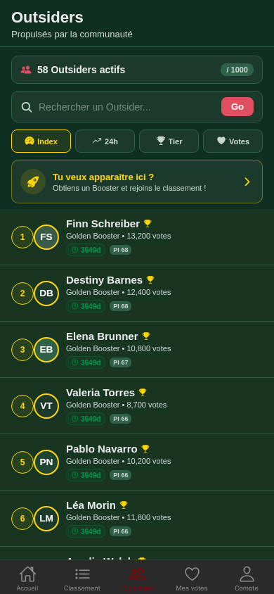
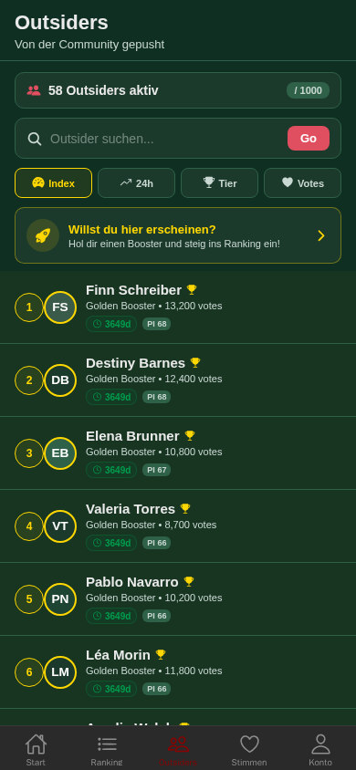
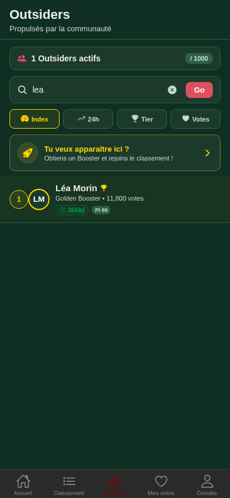

🏗️ Chantier 1L — Validation visuelle
Capacité 1000 Outsiders + Rotation + Recherche + Tri
1. Page Outsiders FR — Vue par défaut (tri Index)

58 Outsiders actifs / 1000 • Barre de recherche • 4 pilules de tri • CTA promo • Cartes avec PI + temps restant
2. Page Outsiders DE — Vérification layout allemand

"Von der Community gepusht" • "Willst du hier erscheinen?" • Pilules de tri compactes • Layout intact
3. Recherche accent-insensible — "lea" → Léa Morin

Recherche "lea" → Léa Morin (accent-insensible ✅) • Compteur filtré "1 Outsiders actifs" • Bouton clear (×)
4. Pagination en bas

Navigation ◀ page 1/3 ▶ • "Rotation auto toutes les 10 min"
CTA Promo — Formulations par langue :
🇫🇷 FR : "Tu veux apparaître ici ? — Obtiens un Booster et rejoins le classement !"
🇬🇧 EN : "Want to appear here? — Get a Booster and join the ranking!"
🇩🇪 DE : "Willst du hier erscheinen? — Hol dir einen Booster und steig ins Ranking ein!"
🇪🇸 ES : "¿Quieres aparecer aquí? — ¡Consigue un Booster y únete al ranking!"
🇮🇹 IT : "Vuoi apparire qui? — Prendi un Booster e unisciti alla classifica!"
🇵🇹 PT : "Quer aparecer aqui? — Obtenha um Booster e junte-se ao ranking!"
Position : Banner séparé au-dessus de la liste (après les pilules de tri, avant le premier Outsider). Icône 🚀 dorée + chevron →. Redirige vers /premium.